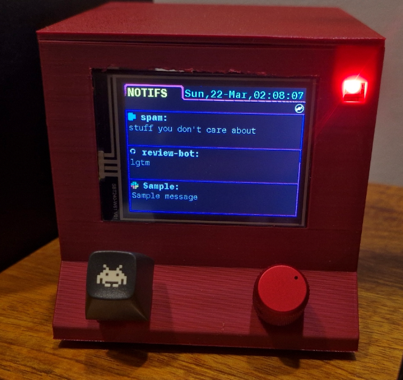
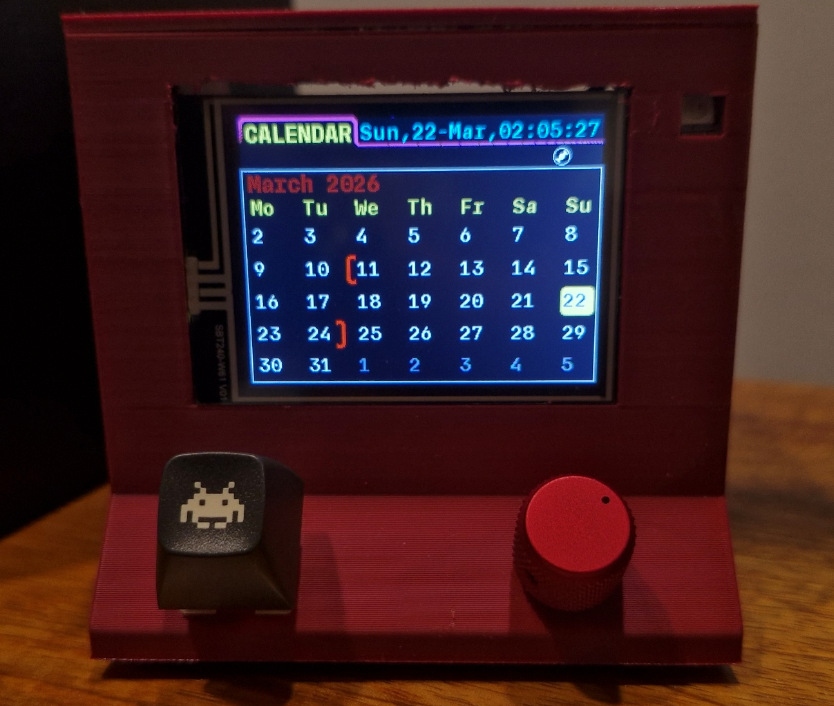
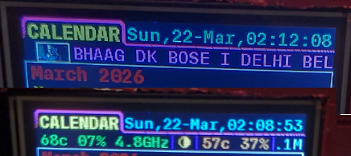
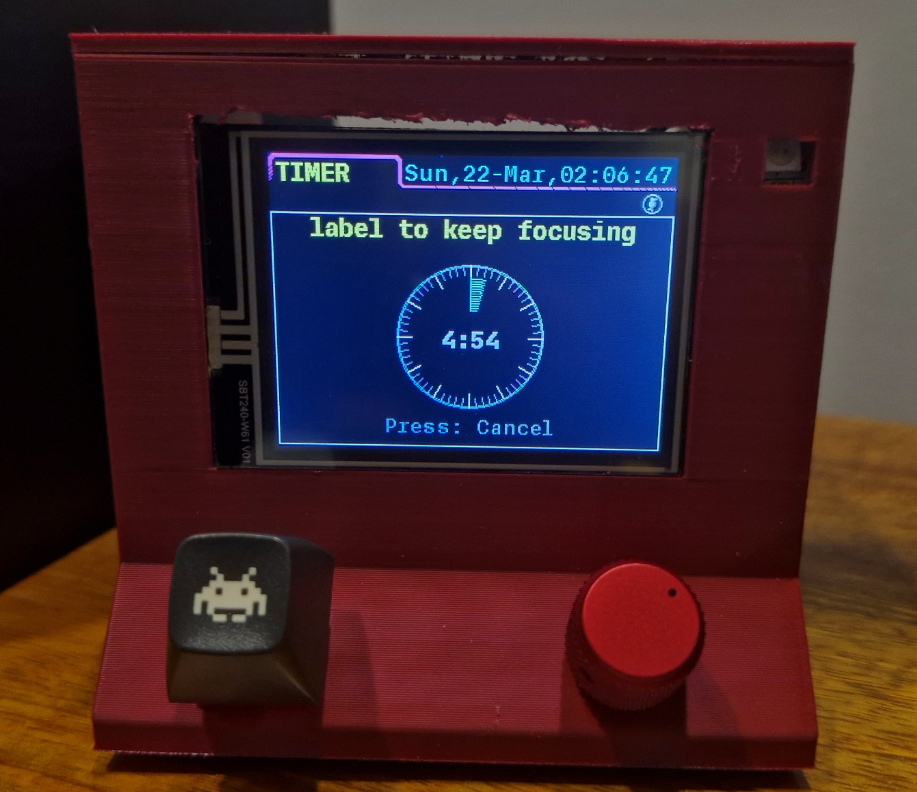
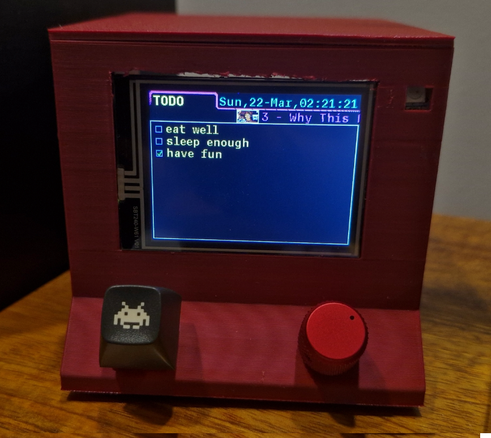
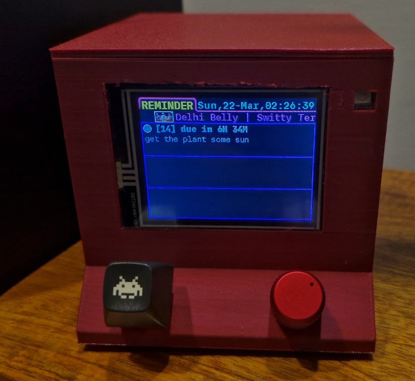

Retro
Building stuff
Notification Centre
Using an ESP32 and a screen to remove phone from my workflow. A desk companion that offloads information and notifications and (hopefully) prevents distractions.
Notifications

- Notifications to the phone are forwarded to the ESP32 via a Tasker profile.
- App icons are shown along with sender and the notif message
- LED lights up (I abhor audio pings for notifications) to grab attention
Calendar

- Highlights current day and keeps current week in the middle of the screen
- Sprint start and end markers for quick reference
Status Zone

- Consolidated view for PC thermals (CPU/GPU) and system load.
- Integrated Windows Media ticker showing "Now Playing" artist and title. Shows thumbnail of currently playing media (resolution respected, 16:9 for youtube and 1:1 for album arts)
- Works by running a python script on desktop that sends data every second
- Idle animation (when script is not running) shows a rolling record going left and right
Timer

- Keeping track and focusing on particular task
- Rotate EC11 encoder to set time (from any screen), press to start/stop timer
- Label at top for reminding what task needs to be focused on
To Do

- Upto 10 to do items that can be added
- Option to either remove or complete (checkmark) any completed task
Reminders

- Set reminder for any future event
- Stored in non-volatile flash memory (NVS) to survive power cycles.
- Can snooze and dismiss reminders
Web Dasboard (Hosted on laptop itself)
- Complete control of the screen using a static webpage that the ESP32 serves
- Easy debug access in case of failures or glicthes